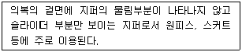

패션머천다이징산업기사 (2005-03-06 기출문제)
1과목: 패션마케팅
1. 패션 마케팅 활동을 발전 과정의 순서대로 나열한 것 중 옳은 것은?
- 적극적 판매촉진 - 유통망 확대 - 그린 마케팅 - 통합적 마케팅
- 유통망 확대 - 전사적 마케팅 - 적극적 판매촉진 - 그린 마케팅
- 유통망 확대 - 적극적 판매촉진 - 전사적 마케팅 - 그린 마케팅
- 전사적 마케팅 - 적극적 판매촉진 - 그린마케팅 - 통합적 마케팅
(정답률: 알수없음)

2. 수요에 대비한 가격 탄력성이 낮은 경우가 아닌 것은?
- 디자인이 뛰어난 상품
- 고소득층을 상대로 하는 고급 상품
- 패션 수용도가 절정에 달한 상품
- 품질이나 상표명성이 높은 상품
(정답률: 알수없음)
3. 표적시장 선정에 유용한 시장세분화 변수와 그 예로 적합하지 않은 것은?
- 인구통계적 변수 - 성별, 소득
- 사이코그래픽 변수 - 연령, 직업
- 행동적 변수 - 추구편익, 사용량
- 지리적 변수 - 시, 군
(정답률: 알수없음)
4. 어패럴 머천다이저가 수행해야 할 다섯가지 책임에 해당하지 않는 것은?
- 조직운영 책임
- 상품관리 책임
- 의사결정 책임
- 업무체크 책임
(정답률: 알수없음)
5. 다음 중 머천다이저의 업무로서 구별되는 것은?
- 쇼윈도우 디스플레이
- 상품기획 및 개발
- 재고관리
- 상품선정과 사입
(정답률: 알수없음)
6. 패션기업의 고객 관계 마케팅시스템의 예가 아닌 것은?
- 신속대응 시스템(QRS )
- 정확반응 시스템(ARS)
- 데이터베이스 마케팅
- 체험 마케팅
(정답률: 알수없음)
7. 다음은 표적 시장(target market)에 대한 설명이다. 옳은 것은?
- 표적시장 기획은 시즌별 상품 기획의 세 번째 단계에 해당된다.
- 상표마다 이미 규정된 표적시장을 가지고 있지는 않다.
- 사회 변화에 따라 표적시장의 특성은 계속 변화한다.
- 표적시장의 특성을 파악하기 위해서는 소비자 조사만 행하면 된다.
(정답률: 알수없음)
8. 포지셔닝에 대해 옳지 않게 설명한 것은?
- 경쟁브랜드와의 관계를 보여준다.
- 소비자의 지각에 기초한다.
- 마케팅믹스 계획의 기초가 된다.
- 한번 설정되면 변하지 않는다.
(정답률: 알수없음)
9. 패션제품의 믹스에 관한 내용 중 틀린 것은?
- 토탈 패션업체의 경우 제품 믹스의 넓이가 넓다.
- 진의류만을 취급하는 브랜드의 경우는 제품믹스의 길이가 짧다.
- 다양한 색상과 사이즈는 제품믹스의 길이와 상관있다.
- 패션제품 믹스에 있어 각 제품간에는 이미지의 일관성이 유지되어야 한다.
(정답률: 알수없음)
10. 패션광고에 관한 내용으로 틀린 것은?
- 패션광고의 목적은 상품의 판매, 소비자의 충성도 형성, 정보의 산포 등이다.
- 상품광고의 경우 소비자의 흥미를 유발시켜 소비자가 매장을 방문하고 복수구매를 유도하기 위함이다.
- 점포광고의 경우 소비자의 빠른 반응보다는 장기적인 목적을 위해 이미지나 서비스 등에 관한 광고이다.
- 유행의 초기에는 상품광고를 위한 구매설득, 중기에는 상품에 대한 점포이미지 혹은 상표이미지를 한다.
(정답률: 알수없음)
11. 의사결정과정의 정보탐색에 있어 기업이 제공하는 정보의 원천이 아닌 것은?
- 판매원
- 광고
- 각종 설명서
- 구전
(정답률: 알수없음)
12. 리테일 머천다이저의 업무 중 적합한 상품을 적합한 양만을 발주하여 최적의 시기에 최적의 장소에서 적절한 가격대로 소비자에게 공급하는 활동은?
- 기획활동
- 정보수집활동
- 사입활동
- 판매활동
(정답률: 알수없음)
13. 마케팅믹스의 제품계획 활동으로 적합하지 않은 것은?
- 판매할 상품이나 서비스를 계획하고 개발한다.
- 신상품 개발을 한다.
- 소비자의 욕구를 알기 위해 시장조사를 한다.
- 디스플레이 시안을 계획한다.
(정답률: 알수없음)
14. PDS(pattern design system)의 특성이 아닌 것은?
- 신속하고 정확하다.
- 초기에는 비용면에서 저렴하다.
- 실제 사이즈에 대한 적응이 필요하다.
- 제작 과정의 통합으로 신속하다.
(정답률: 알수없음)
15. 리테일 머천다이저의 개념을 가장 잘 설명한 것은?
- 정보 기획업에 있어서 머천다이징 담당자
- 제조업에 있어서 머천다이징 담당자
- 유통업에 있어서 머천다이징 담당자
- 프로모션업에 있어서 머천다이징 담당자
(정답률: 알수없음)
16. 패션 머천다이저의 자질에 관한 설명 중 틀린 것은?
- 급속히 변화하는 마켓에 대응하는 행동이 필요하다.
- 소비자, 시장의 동향을 분석할 수 있어야 한다.
- 유형, 무형에 상관없이 자기의 독창적인 발상이나 착상을 설계, 계획한다.
- 논리적인 사고와 표현력을 가져야 한다.
(정답률: 알수없음)
17. 제조업 패션머천다이징에 있어 상품기획의 순서로 적합한 것은?
- 표적시장 기획 - 머천다이징 컨셉 –정보기획 – 상품구성 – 디자인 - 품평회
- 정보기획 - 표적시장 기획 - 머천다이징 컨셉 – 디자인 – 상품구성 - 품평회
- 표적시장 기획 – 정보기획 - 머천다이징 컨셉 – 디자인 – 상품구성 - 품평회
- 표적시장 기획 – 정보기획 –머천다이징 컨셉 – 상품구성 – 디자인 - 품평회
(정답률: 알수없음)
18. 마케팅 믹스(marketing mix)를 나타내는 4P's 란?
- 제품계획, 가격구조, 판매촉진활동, 유통구조
- 상품기획, 제품생산, 상품진열, 판매촉진
- 패션기획, 패션상품, 패션홍보, 패션판매
- 패션기획, 패션상품, 패션프로모션, 패션유통
(정답률: 알수없음)
19. 표적시장에서 기업이 마케팅 목적을 추구하기 위해 사용하는 마케팅수단의 집합은?
- 마케팅믹스
- 제품이나 서비스
- 촉진
- 광고
(정답률: 알수없음)
20. 비주얼 머천다이저(Visual Merchandiser)의 역할은?
- 점포 차별화 전략에 의한 컨셉에 따라 시각적인 상품구성을 한다.
- 시장과 소비자에 대한 정보 수집 후 상품생산을 기획한다.
- 점포 타겟이 원하는 상품을 적절한 시기에 사입한다.
- 상품의 원활한 유통을 돕고 재고를 관리한다.
(정답률: 알수없음)
2과목: 패션소재기획
21. 소비자의 의복착용 실태나 특정 스타일에 관한 반응을 조사하기 위하여 정해진 시간에 무작위로 직접 관찰하는 시장조사 방법에 해당하는 것은?
- 표본 조사
- 설문지 조사
- 거리 패션 조사
- 시장 점유율 조사
(정답률: 알수없음)
22. 면섬유를 가공하여 은은한 광택, 형태안정성, 뛰어난 발색성 등을 부여하여 기존의 면소재와 차별화를 준 소재는?
- 친즈(Chintz) 소재
- 실켓가공(Silket-Finishing) 소재
- 샌포라이징(sanforazing) 소재
- 코팅(Coating) 소재
(정답률: 알수없음)
23. 패션이미지와 소재가 어울리지 않는 것은?
- 뉴 로맨틱 - 레이스(Lace)
- 하이테크 - 머슬린(Muslin)
- 스포티 - 고어텍스(Gore-Tex)
- 클래식 - 하운드투스 체크(Haund's check)
(정답률: 알수없음)
24. 빛 바랜 듯한 이미지로 패션성을 나타내는 청바지 데님(Denim)소재에 주로 사용되는 염료는?
- 인디고 염료
- 반응성 염료
- 매염염료
- 분산염료
(정답률: 알수없음)
25. 다음 중 대량 생산된 최종 제품의 검사기준이 아닌 것은?
- 외관
- 공정
- 사이즈
- 품질
(정답률: 알수없음)
26. 다음 섬유 중 열과 가해지는 힘만으로 영구적인 주름을 만들 수 있는 소재가 아닌 것은?
- 트리아세테이트
- 폴리에스테르
- 비스코스레이온
- 폴리아미드
(정답률: 알수없음)
27. 다음은 우리나라의 전통적인 견직물에서 볼 수 있는 직물과 그 조직을 연결한 것이다. 바르게 연결된 것은?
- 갑사 - 평직과 여직을 배합한 변화익직
- 숙고사 - 사직 바탕에 평직으로 된 무늬의 한복감
- 생고사 - 사직 바탕에 평직으로 된 무늬의 한복감
- 항라 - 평직과 여직을 배합한 변화익직
(정답률: 알수없음)
28. 부직포의 특징이 아닌 것은?
- 방향성이 없다.
- 함기량이 적다.
- 탄성과 레질리언스가 좋다.
- 강도가 부족하다.
(정답률: 알수없음)
29. 다음 중 각 섬유의 연소시험에 대한 거동을 올바르게 설명한 것은?
- 녹지않고 계속 잘 타며 소량의 잿빛의 부드러운 재가되는 것은 실크이다.
- 아크릴 섬유는 녹으면서 계속 잘타고 만지면 부서지는 재가 남는다.
- 나일론이나 폴리에스테르는 녹으면서 빨리 연소된다.
- 레이온은 태우면 식초냄새가 난다.
(정답률: 알수없음)
30. 다음은 능직의 특징을 나열한 것이다. 적절하지 않은 것은?
- 경위사가 두올 이상이 교차하여 조직점이 대각선 방향으로 연결되어 나타난다.
- 평직에 비하여 조직점이 많으므로 밀도를 크게 할 수 있다.
- 마찰에는 평직보다 약하지만 광택이 좋고 표면결이 좋아 양복감으로 많이 사용된다.
- 평직에 비해 조직점이 적어 유연하고 밀도를 크게 할 수 있어서 두꺼우면서도 부드럽다.
(정답률: 알수없음)
31. 면섬유 소재 중 러스틱(Rustic)한 이미지의 Cool-Cotton 으로 적합하지 않은 것은?
- 리플(Ripple)가공 소재
- 워싱(Washing)가공 소재
- 시어 서커(Seer-Sucker) 소재
- 플리세(Plisse)가공 소재
(정답률: 알수없음)
32. 트리아세테이트가 디아세테이트에 비해 가장 우수한 성질은?
- 탄성회복률
- 염색성
- 강도
- 내열성
(정답률: 알수없음)
33. 양모의 스케일(scale)층과 가장 관련성이 적은 섬유의 성질은?
- 방추성
- 내마찰성
- 축융성
- 방적성
(정답률: 알수없음)
34. 다음 중 섬유의 융점(融點)이 가장 높은 섬유는?
- 아마(linen)
- 양모(wool)
- 모드아크릴(modacrylic)
- 아라미드(aramid)
(정답률: 알수없음)
35. 다음 중에서 소재기획의 특성으로 옳지 못한 것은?
- 소재기획 단계에서 최종 제품의 사용 용도는 기본적인 기획의 방향을 제한하거나 제시한다.
- 소재는 제품을 만들기 위한 중간재이므로, 소재기획 단계에서 최종 제품의 특성을 고려하지 않아도 된다.
- 대량생산 제품은 소재기획 시기와 최종 제품의 판매시기의 차이가 크다고 볼 수 있다.
- 성공적인 소재 기획을 위해서는 디자인, 기술, 마케팅 등의 부분들이 서로 통합적으로 작용하여야 한다.
(정답률: 알수없음)
36. 의류업체에서 소재기획을 할 때 그 프로세스의 순서가 맞게 나열된 것은?
- 정보수집 및 트랜드분석 - 이미지맵 - 소재맵 - 스타일과 소재선정 - 발주 및 생산
- 정보수집 및 트랜드분석 - 소재맵 - 이미지맵 - 스타일과 소재선정 - 발주 및 생산
- 정보수집 및 트랜드분석 - 이미지맵 – 스타일과 소재선정 - 소재맵 - 발주 및 생산
- 정보수집 및 트랜드분석 - 스타일과 소재선정 - 이미지맵 - 소재맵 - 발주 및 생산
(정답률: 알수없음)
37. 소재기획에 필요한 시장정보에 관한 내용이다. 적절하지 않은 것은?
- 소비자행동에 관한 정보를 분석하며 소비자의 요구를 파악해야 한다.
- 기업 내부의 인적, 물적자원 및 경쟁력 등에 관한 정보를 분석할 수 있어야 한다.
- 경쟁기업의 판매실적 평가, 미래전략 예측 등의 정보를 수집, 분석하여야 한다.
- 시장정보는 대중매체, 패션정보기관, 인터넷 등을 정보원으로 한다.
(정답률: 알수없음)
38. 다음 마 소재 중 가장 딱딱한 느낌으로 천연쪽염 및 내츄럴 색상으로 많이 사용되는 마 섬유는?
- 카폭(kapok)
- 라미(ramie)
- 대마(hemp)
- 비니션
(정답률: 알수없음)
39. 중합체를 유기용매에 용해시킨 방사원액을 물 또는 약품 수용액 중에 사출하여 방사원액을 응고시키는 방법은?
- 습식방사
- 건식방사
- 용융방사
- 건습식방사
(정답률: 알수없음)
40. 면, 마, 레이온등의 직물이 제조과정에서 받았던 장력이 이완되어 안정화됨에 따라 수축이 일어나는 것을 미리 압축처리를 하여 수축을 방지하는 가공법은?
- 런던 슈렁크(London shrunk)
- 샌포라이징(Sanforized)
- 머서화 가공(Mercerization)
- 신지잉(Singeing)
(정답률: 알수없음)
3과목: 유통관리 및 광고
41. 광고매체 중 표적시장에 가장 효과적으로 도달 할 수 있는 매체는?
- 라디오
- 잡지
- TV
- 옥외광고
(정답률: 알수없음)
42. 브로셔(Brochures)광고의 특징과 가장 상관이 있는 것은?
- 반복 노출도가 높다.
- 광고 가격이 높다.
- 지속적 독자수가 많다.
- 불필요한 비용을 초래한다.
(정답률: 알수없음)
43. 광고매체별 특성을 설명한 것 중 틀린 것은?
- 인터넷 매체는 선별성이 높고 비용이 낮다.
- TV는 감각적 소구가 높은 매체로 주의도가 높고 청중 선별이 가능한 매체이다.
- 라디오는 비교적 생명이 짧으므로 반복했을 때 효과가 크다.
- 전화는 개인적 접촉의 기회라는 장점이 있지만 상대적으로 높은 비용이 든다.
(정답률: 알수없음)
44. 다음은 YOUNG 층의 복종별 구매포인트에 대한 설명이다. 틀린 것은?
- 슈트 & 원피스 - 캐쥬얼 감각의 니트나 폴로셔츠의 셋트, 원피스 등으로 조정한다.
- 컷엔소 - 다른 복종보다 생산기간이 길며 디자인 상품의 소재는 매장에 전개하기 180~240일 전에 결정된다.
- 하의 - 스커트가 주체가 되고, 제품의 길이는 안정성 있게 팔리는 길이에 맞추어 전개한다.
- 스웨터 - 베이직 타입의 상품구색이 중심이 되고, 소재는 봄·여름은 면이나 마, 가을·겨울은 울(wool)소재 또는 양모가 중심이 된다.
(정답률: 알수없음)
45. 의류브랜드 업체가 직접 경영하는 직영점으로 안락한 쇼핑을 제공하는 대형 점포는?
- SPA
- Outlet store
- Discount store
- Category killer
(정답률: 알수없음)
46. 다음 중 광고매체를 선택하기 위한 기준이 아닌 것은?
- 표적 소비자별 매체 습관
- 시즌 특성
- 메시지 유형
- 제품 특성
(정답률: 알수없음)
47. 백화점에서 매장 분류를 할 때 패션 마인드·테이스트 별 분류가 아닌 것은?
- 어드밴스드(Advanced)
- 컨템퍼러리
- 컨저버티브(Conservative)
- 프레스티지(Prestige)
(정답률: 알수없음)
48. 상품계획을 수립하는 패션 바이어에게 꼭 필요한 능력으로 가장 거리가 먼 것은?
- 왕성한 행동력
- 세련된 감성
- 기발한 창조력
- 정확한 예측력
(정답률: 알수없음)
49. 제조업자와 소비자 사이에서 전문화된 마케팅 기능을 수행하는 유통경로 중간상이 아닌 것은?
- 소매상
- 도매상
- 중간 도매상
- 광고 대행사
(정답률: 알수없음)
50. 제조업체가 자사제품 또는 재고품을 초염가로 판매하는 직영점 형식의 소매형태는?
- 팩토리 아울렛
- 양판점
- 편의점
- 전문점
(정답률: 알수없음)
51. 다음은 패션 바이어인 김씨의 직무들을 열거한 것이다. 김씨의 직무에 해당되지 않는 것은?
- 의류 생산 방식의 결정, 품목 결정
- 납품 시기와 수량 결정, 구매처 결정
- 상품의 검사 방법 결정, 보충발주단위와 수속방법 결정
- 창고운송 단위와 방법 결정, 판매가 표시방법 결정
(정답률: 알수없음)
52. 효율적인 재고관리를 위하여 수행해야 할 과제로서 적합하지 않은 것은?
- 정확한 상품재고의 파악
- 납기지연 및 결품 방지
- 부동재고의 발생 방지
- 판매원의 서비스 강화
(정답률: 알수없음)
53. 바람직한 사입처를 개발하기 전에 가장 먼저 해야 할 일은 무엇인가?
- 사입처의 신용조사를 한다.
- 거래조건을 조사한다.
- 사입 목적을 명확히 한다.
- 사입처의 담당자와 권한을 조사한다.
(정답률: 알수없음)
54. 비쥬얼 머천다이징 효과로 기대하기가 가장 어려운 것은?
- 기업문화 창조
- 판매동향 체크
- 상품소구력 향상
- 효율적인 점내 상품관리
(정답률: 알수없음)
55. 국내 의류제조회사의 입장에서 위탁사입제도의 장점이 아닌 것은?
- 상권특성에 따른 물량배분으로 판매를 극대화할 수 있다.
- 상품기획과 생산에만 전념 할 수 있어 전문화가 가능하다.
- 소매점들의 요구가 높은 상품을 집중생산함에 따라 판매율을 높일 수 있다.
- 소매점주들의 이익이 극대화됨에 따라 유통망 확보 및 유지가 비교적 용이하다.
(정답률: 알수없음)
56. 위탁 사입상품에 대한 설명 중 해당되지 않는 것은?
- 악성재고에 의한 위험부담을 소매점이 부담하는 것이다.
- 어떤 일정기간 납품측으로부터 판매를 위탁받는 형식을 취하는 상품이다.
- 상품대금 지불방법은 판매기간 종료 후에 판매된 상품 대금만 지불한다.
- 상품구색계획에서는 납품측의 의견이 중요시되므로 소매가격의 결정권도 납품측이 가지고 있다.
(정답률: 알수없음)
57. 소비자에게 일정한 회비를 받고 회원인 고객에게만 30~50% 할인된 가격으로 정상품을 판매하는 유통업은?
- 양판점
- 편의점
- 회원제 창고형 도,소매점
- 할인점
(정답률: 알수없음)
58. 다음 중 인테리어의 일부가 아닌 것은?
- 매장바닥
- 간판
- 피팅룸
- 쇼핑백
(정답률: 알수없음)
59. VMD 전개의 위치에 대한 설명이 잘못 연결된 것은?
- VP - 고객의 시선이 처음 닿는 쇼윈도우나 스테이지
- PP - 매장내에서 자연스럽게 고객의 시선이 닿는 곳
- IP - 점내 제반 집기류
- MP - 벽면의 상단 부분 또는 집기류 상단
(정답률: 알수없음)
60. 상품의 판매율을 높이기 위한 올바른 매장 구성으로서 가장 거리가 먼 것은?
- 상품을 찾기 쉬워야 한다.
- 상품을 고르기 쉬워야 한다.
- 상품을 구매하기 쉬워야 한다.
- 판매원의 접근이 쉬워야 한다.
(정답률: 알수없음)
4과목: 패션디자인론 및 의복구성학
61. Flat Collar 의 서는 분량을 많이 하려면?
- 어깨선을 많이 겹친다.
- 어깨선의 겹치는 양을 적게 한다.
- 목둘레 선을 깊게 파준다.
- 옆 목점의 겹치는 양을 조절한다.
(정답률: 알수없음)
62. 패션선도자의 추종자가 동일한 사회적 계층내에 존재하며 모방의 대상을 다른 계층에서 찿는 것이 아닌 동일계층에서 찾고, 대량생산이 가능하게 됨으로써 발생한 전파이론은 무엇인가?
- 하향 전파이론
- 수평 전파이론
- 상향 전파이론
- 집합 선택이론
(정답률: 알수없음)
63. 대량생산이 결정된 패턴을 재단하고자 하는 소재와 같은 넓이의 형지에 식서방향으로 맞춰 배열한 요척도는?
- 그레이딩(grading)
- 마킹(marking)
- 연단(spreading)
- 재단(cutting)
(정답률: 알수없음)
64. 디자이너 발렌티노는 "여자들은 누군가를 만족시키는 것을 좋아한다. 옷을 입을 때도 누군가 다른 사람을 염두에 두는 것이다. 그것은 친구도 될 수 있고 남편도 될 수 있고 연인도 될 수 있다. 혹은 자신이 정복하고 싶은 사람도 될 수 있다" 라고 하였다. 이 말은 옷의 기원설 중 어느 부분에 해당되는가?
- 장식설
- 이성흡인설
- 수치설
- 환경적응설
(정답률: 알수없음)
65. 심지에 대한 설명 중 틀린 것은?
- 모심지는 신축성, 방축성, 방추성이 우수하다.
- 마심지는 유연성이 좋지 않고 빳빳하다.
- 면혼방심지는 일광이나 땀에 변색이 잘되고 구김 회복성이 약하다.
- 부직포심지는 가격이 저렴하고 직물이나 편성물에 사용할 수 있어 많이 사용된다.
(정답률: 알수없음)
66. 의복의 장식적인 디자인으로 디테일(detail)과 트리밍(trimming)이 있다. 다음 의복장식 중 그 종류가 다른 것은?
- 스모킹(smocking)
- 시퀸(sequin)
- 비드(bead)
- 브레이드(braid)
(정답률: 알수없음)
67. 다음 설명에 해당하는 것은?

- 콘실지퍼
- 오픈지퍼
- 바지지퍼
- 기본지퍼
(정답률: 알수없음)
68. 패션산업 머천다이징의 프로세스의 순서가 올바른 것은?
- 발상 – 평가 – 개발 – 제품화 - 시장도입
- 개발 – 발상 – 평가 – 제품화 - 시장도입
- 발상 – 개발 – 평가 – 제품화 - 시장도입
- 발상 – 개발 – 시장조사 – 평가 – 제품화 - 시장도입
(정답률: 알수없음)
69. 의복패턴에는 여러 가지가 있다. 그 중 그레이딩의 기본이 되는 패턴은?
- 베이직(basic) 패턴
- 샘플(sample) 패턴
- 마스터(master) 패턴
- 생산용(production) 패턴
(정답률: 알수없음)
70. 재단기의 종류 중 현재 가장 많이 사용되고 있으며, 곡선이나 각의 재단을 정확하게 할 수 있는 재단기의 명칭은?
- 원형칼 재단기
- 수직칼 재단기
- 밴드 나이프 재단기
- 컴퓨터 재단기
(정답률: 알수없음)
71. 배럴 실루엣(barrel silhouette)에 속하는 실루엣은 다음 중 어느 실루엣인가?
- 트럼펫 실루엣(trumpet silhouette)
- 벌크 실루엣(bulk silhouette)
- 쉬드 실루엣(sheath silhouette)
- 복시 실루엣(boxy silhouette)
(정답률: 알수없음)
72. 그레이딩에 대한 설명 중 틀린 것은?
- 상의의 그레이딩은 여성복의 경우 가슴둘레를 기준으로 한다.
- 그레이딩 량은 인체계측치의 변화량이나 체형별 사이즈 스펙이 고려되어야 한다.
- 하의의 그레이딩은 여성복의 경우 허리둘레와 엉덩이 둘레를 기준으로 한다.
- 그레이딩은 프로덕션 패턴을 편차에 따라 확대, 축소하는 과정이다.
(정답률: 알수없음)
73. 패션디자인의 원리 중 강조에 해당하지 않는 것은?
- 대조
- 우세
- 집중
- 변이
(정답률: 알수없음)
74. 바지에서 앞 밑아래가 당기며 주름이 생기는 경우 패턴을 어떻게 보정하여야 하는가?
- 뒤 허리 중심을 파고 허리 둘레를 둥글게 한다.
- 앞의 밑위와 밑아래을 추가하여 넓혀준다.
- 뒤판의 엉덩이선을 절개하여 옆선은 그냥 두고 뒤 중심선을 쐐기 모양으로 벌려준다.
- 밑위선을 아래로 내려준다.
(정답률: 알수없음)
75. 좋은 디자인을 성립시키기 위한 디자인의 기본 조건을 나열한 것이다. 적합하지 않은 것은?
- 합리성
- 경제성
- 심미성
- 일관성
(정답률: 알수없음)
76. 다음 중에서 봉사의 소요량이 가장 많은 의복은?
- 외투
- 재킷
- 바지
- 드레스가운
(정답률: 알수없음)
77. 의복원형제도시 신체 각 부위의 치수를 섬세하게 계측하여 그 치수를 원형으로 표현해가는 제도법을 무엇이라 하는가?
- 단촌식 제도법
- 장촌식 제도법
- 도레메식 제도법
- 절충식 제도법
(정답률: 알수없음)
78. 디자인 과정으로 맞는 것은?
- 목표설정 – 분석 – 종합 - 평가
- 분석 – 목표설정 – 종합 - 평가
- 목표설정 – 종합 – 분석 - 평가
- 분석 – 목표설정 – 종합 - 평가
(정답률: 알수없음)
79. 디테일(detail)에 대한 설명 중 가장 옳은 것은?
- 주머니나 허리선은 디테일에서 제외한다.
- 디테일은 네크라인, 칼라, 소매, 주머니, 허리선 등으로 구분한다.
- 디테일은 미적 목적을 위하여 별도의 재료를 첨부하여 장식한다.
- 허리선이나 가슴선은 디자인의 의미가 없다.
(정답률: 알수없음)
80. 패션 주기에 대한 설명으로 적합하지 않은 것은?
- 패션의 수락단계는 패션 전문가들에 의해 구매되는 단계이다.
- 패션의 퇴화단계는 대부분의 사람들이 같은 스타일의 옷을 입는 단계이다.
- 패션주기는 새로운 스타일이 소개되고 전파되어 패션의 절정에 이룬 다음 쇠퇴하고 소멸하는 현상이다.
- 패션의 소개단계는 패션 선구자들에 의해 구매되는 단계이다.
(정답률: 알수없음)
5과목: 패션정보분석
81. 국제 유행색 협회에 대한 설명 중 맞는 것은?
- 각국의 공적, 사적인 유행색연구기관들의 가맹이 인정된다.
- 프랑스, 미국, 이탈리아의 유행색을 협의, 결정하는 기관이다.
- 국제 양모사무국이나 국제 면업진흥회 등은 참석할 수 없다.
- 각국 위원들이 제안색을 가지고 와서 2년후의 유행색을 예측, 결정한다.
(정답률: 알수없음)
82. 소매점에 대한 정보내용이 아닌 것은?
- 고객착용 경향 정보
- 입점고객 정보
- 가격 정보
- 유동인구 정보
(정답률: 알수없음)
83. 패션 정보에 대한 설명이 옳은 것은?
- 본 시즌의 24개월 전에 유명 디자이너의 콜렉션이 열린다.
- 국내외 학술지만을 통해 패션 트랜드를 미리 예측할 수 있다.
- 기업환경 정보는 패션업체의 통제가 가능한 미시적 요소이다.
- 시장 정보에는 소매점 정보, 경쟁사 정보, 소재정보 등이 포함된다.
(정답률: 알수없음)
84. 바이어와 머천다이저가 패션마케팅 활동을 하기 위해 수집해야 할 정보가 아닌 것은?
- 패션마케팅 환경 정보
- 패션 트렌드 정보
- 패션비지니스 정보
- 수출입 정보
(정답률: 알수없음)
85. 다음 중 어패럴 메이커에서 정보를 수집하는 목적과 가장 상관이 먼 것은?
- 기업 경영전략에 활용하기 위하여
- 담당 부서의 사업계획 수립에 필요하여
- 정보원의 참고자료로 활용하기 위하여
- 신상품의 개발에 필요하여
(정답률: 알수없음)
86. 현대인의 라이프 스타일 경향으로 올바르지 않은 것은?
- 신세대의 등장
- 사생활 중시 경향
- 탈물질적 경향
- 여성 우월주의
(정답률: 알수없음)
87. 패션 컬러(color)정보 전문기관으로 틀린 것은?
- CAUS
- KOFCA
- CPD
- ICA
(정답률: 알수없음)
88. 아이템 정보에 관한 설명으로 옳지 않은 것은?
- 아이템은 의복의 종류를 의미한다.
- 소비자의 상표 인지도를 알 수 있다.
- 아이템은 일반적으로 원피스, 투피스, 재킷 등으로 호칭한다.
- 실루엣별로 구분하여 A-Line, Box-Line 등으로 분류할 수 있다.
(정답률: 알수없음)
89. 정보분석에 따른 체크리스트가 틀린 것은?
- 왜 그와 같은 것을 나타낼 수 있는가-Reason
- 언제 나온 정보인가-Time
- 어디서 생성된 정보인가-Source
- 어떠한 과정으로 생성되었는가-Addresser
(정답률: 알수없음)
90. 작년과 금년의 인기 상품과 비인기 상품을 조사, 분석한 정보는?
- 패션트렌드 정보
- 소매점 정보
- 소비자 정보
- 국내외 학술정보
(정답률: 알수없음)
91. 의복 구매행동 단계의 순서를 바르게 나타낸 것은?
- 인식단계 – 정보단계 – 적용단계 – 시도단계 - 채택단계
- 정보단계 – 인식단계 – 적용단계 – 시도단계 - 채택단계
- 인식단계 – 적용단계 – 정보단계 – 시도단계 - 채택단계
- 정보단계 – 인식단계 – 시도단계 – 적용단계 - 채택단계
(정답률: 알수없음)
92. 패션트랜드에 영향을 미치는 요인이 아닌 것은?
- 소비자 의식이나 구매 패턴
- 국내외의 대규모적인 행사
- 음악 미술들의 예술적인 사조
- 패션 잡지와 소재의 염색
(정답률: 알수없음)
93. 시장 정보 중 관련 산업 부분의 정보라 볼 수 있는 것은?
- 패션에 영향을 미치는 요인 분석
- 색채 경향 분석
- 무늬의 경향 분석
- 컴퓨터의 도입 및 활용정보
(정답률: 알수없음)
94. 프로모스틸(Promostyl)에 대한 설명으로 옳은 것은?
- 의복에 한해서 소비자의 선호를 미리 예측한다.
- 트렌드 설명회와 전시회만을 통해서 패션정보 서비스를 제공한다.
- 여성복, 남성복, 아동복, 액티브 스포츠 웨어의 트렌드를 모두 제공한다.
- 소비자의 구매시점보다 6개월에서 12개월 앞서 정보를 제안한다.
(정답률: 알수없음)
95. 소비자의 구매유형에서 충동구매를 뜻하는 것은?
- 반복적 구매유형
- 비계산적 구매유형
- 계산적 구매유형
- 비반복적 구매유형
(정답률: 알수없음)
96. 상표사용 허가권을 획득한 후 영업활동을 전개하는 해외도입 브랜드의 명칭은?
- 라이센스 브랜드(License brand)
- 내셔널 브랜드(National brand)
- 프라이빗 브랜드(Private brand)
- 디자이너 브랜드(Designer brand)
(정답률: 알수없음)
97. 경쟁 브랜드 정보의 내용으로 틀린 것은?
- 마켓 쉐어
- 브랜드 이미지
- 경제 지표
- 인력 구성
(정답률: 알수없음)
98. 패션 마케팅 조사에서 조사자가 직접 조사대상자를 관찰하는 대신 기계를 이용하여 관찰하는 방법은?
- POS(point of sales)시스템
- 스트리트 패션 조사
- 서베이(survey)법
- 집단 토의법
(정답률: 알수없음)
99. 패션 디자인 정보가 아닌 것은?
- 소재, 색상 및 무늬
- 코디네이션
- 실루엣 형태
- 디테일 테크닉
(정답률: 알수없음)
100. 정보를 수집하는 과정 중 효과적인 성과를 거둘 수 있는 방법이 아닌 것은?
- 수집목표를 분명히 설정한다.
- 필요정보가 무엇인지를 정확히 한다.
- 접근한 정보원으로부터 관련정보를 채집한다.
- 모든 정보를 정리 분석 보관한다.
(정답률: 알수없음)
먼저, 유통망 확대는 제품을 더 많은 고객에게 전달하기 위해 필요한 활동입니다. 다음으로, 적극적 판매촉진은 제품을 더 많은 고객에게 홍보하고 판매를 촉진하기 위한 활동입니다. 전사적 마케팅은 기업 전체에서 마케팅을 일관되게 수행하고, 고객 경험을 개선하기 위한 활동입니다. 마지막으로, 그린 마케팅은 환경 보호와 지속 가능성을 고려한 마케팅 활동입니다.
따라서, 이러한 활동들을 순서대로 수행하면 제품을 더 많은 고객에게 전달하고, 판매를 촉진하며, 기업 전체에서 일관된 마케팅을 수행하고, 환경 보호와 지속 가능성을 고려한 마케팅을 수행할 수 있습니다.